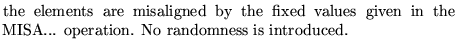
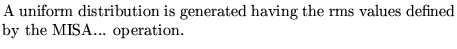
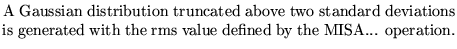
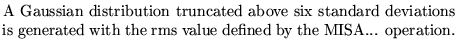
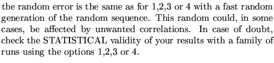
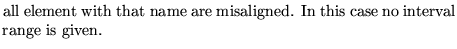
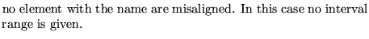
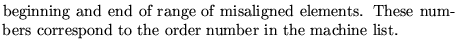

Input formatParameter definitions
SET Misalignment .....(maximum 80 characters)
nopt
nmis
name nintfor i from 1 to nint
.............
name nint
nopt choice option for the random generators
0 
1 
2 
3 
4 
11,12,13,14 
nmis number of misaligned element type (names)
name name of the family of misaligned element
nint number of intervals in which element is misaligned
0 
-1 
nb nf 
Examples
The first example is taken from demo6.
In the second example a gaussian disbtribution truncated at 2 sigmas will be used for the alignment errors of the elements.
SETMISALIGNMENTS 12 9 DFCH 0 DDCH 0 HC 0 DSH 0 QS1D 0 QS2F 0 QS2D 0 QS3F 0 QS3D 0, SETMISALIGNMENTS 13 9 DFCH 0 DDCH 0 HC 0 DSH 0 QS1D 0 QS2F 0 QS2D 0 QS3F 0 QS3D 0,